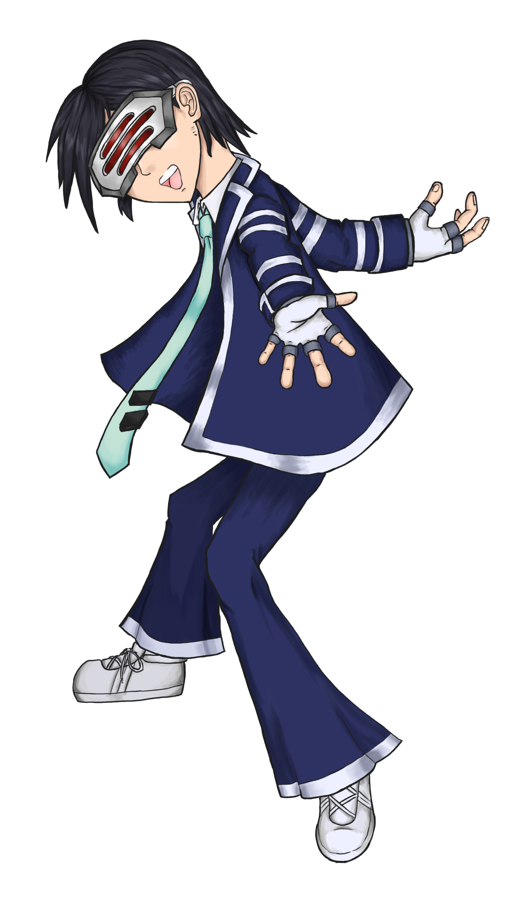
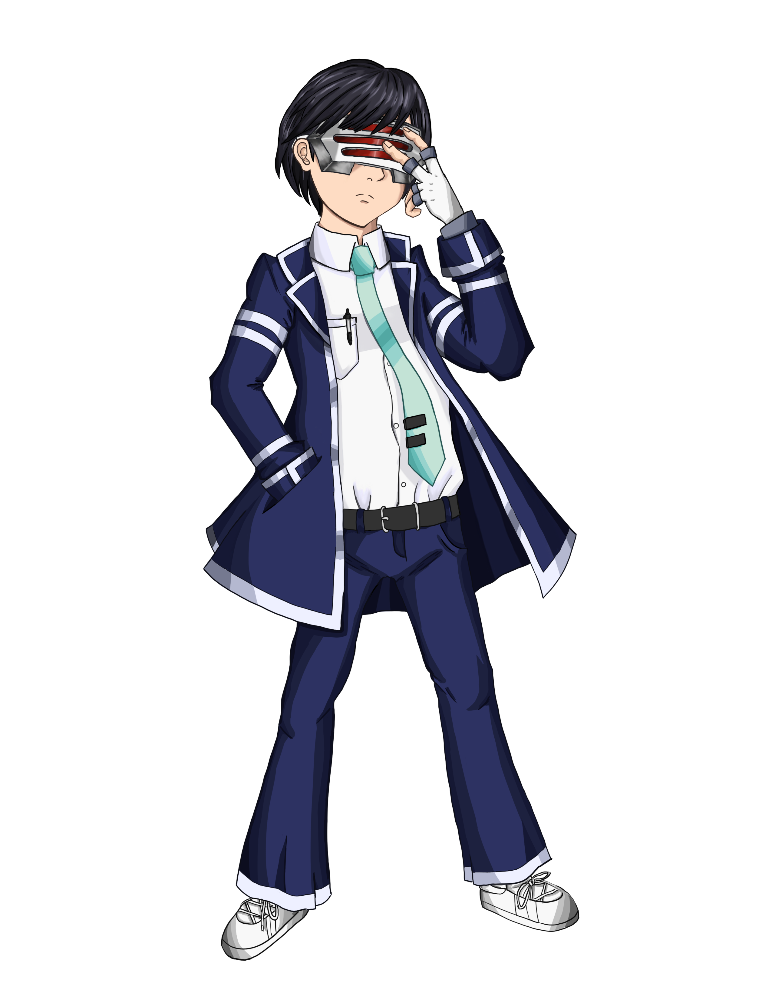
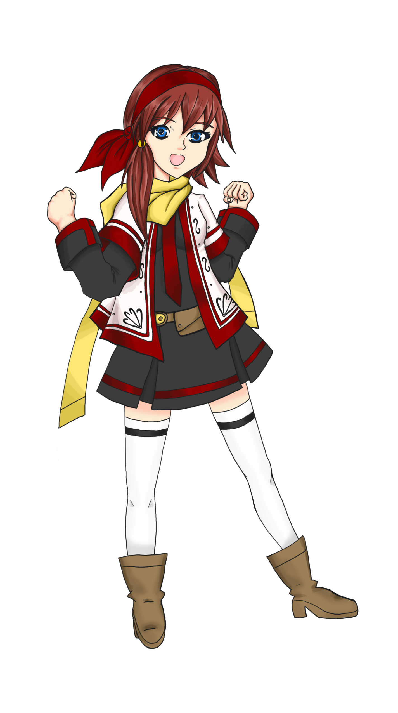

Life of DanX is a series of hi-jinks that an Manga Artist and Animator, DanX have to deal with
Hatsune Miku, self-proclaim queen of his world, and Ravian his adopted daughter. It's basically, my
dumping ground for ideas that I rejected.
Characters
DanX
DanX is an Manga Artist and Animator. He has a personality of an average person with a very negative
personality. Always self-doubting himself, and punishing himself when he does something wrong.
However, he still does his best to make him and his friends happy.
Nobody know his name till this day. Unless you check on the "Abouts Page".
Current Version
Final Rendering of DanX.
The whole point of this avater is to make it look how I was represented.
The mask is a fan made of one of my favorite characters of all time. His name
is Godot (full name: Diego Armando) in "Ace Attorney, Trials and Trbulation".
The outfit is inspired by Apollo Justice's Outfit in "Ace Attorney, Duel Destiny"

Version 1
Sketches of DanX version 1.
Version 2
Sketches of DanX version 2.
Version 3
Sketch of DanX version 3.
Version 3 Colored
DanX version 3. Colored.
The color with this was more inspired with "Persona 5". Just experementing of finding the right style
for myself.

Hatsune Miku
She once posed as Aidorune Niru to fool DanX. Miku is a narcissist, egotisical, and crazy girl who picks on DanX
very often. She does not get punished for anything she does because she makes an excuse that she is cute and
report him for abuse. Her job is to sing for DanX as his partner, but it usually ended up Miku becoming the dominant
one.
Version 1
This is the very first version of Aidorune Niru.
The name "Aidoru" is a how you would say Idle in "Katakana" (another form in Japanese).
The rest is to purposly rhyme with Miku.
Hatsune Miku as Aidorune Niru. Final version.Sketch of Hatsune Miku.A sketch involve with these two.
Natalie Overture
Natalie Overture is an intern for DanX. She is obsessed with ".Last Note" because it's her favorite band of all time.
She is only seventeen years old and gose to school, but like Miku, she ofen goes to his apartment.
One day, she wants to be a manga artist. She is ruthless, and short-tempered. But, she it not very intellegent.

Natalie Overture.Natalie Overture first sketch.Natalie Overture in a different pose.Natalie Overture cosplaying as Angry Video Game Nerd.
Sanni Dei
Sanni Dei is the current president of her own club and the school owner's daughter. She dresses
elegantly. She seems to attract other boys and Natalie Overture. Her personality is describe as
pure and innocent.
Sanni Dei.
Yuri Konpyutaa
Yuri Konpyutaa is a lesbian who often flirts with DanX as a target practice. She is also DanX's technician
when something goes wrong. She is currently dating with another girl.